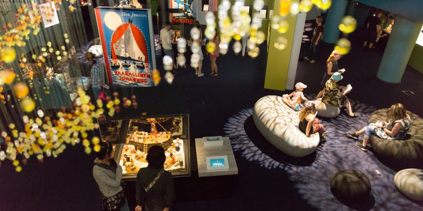

Где жили предки муми-троллей? Какой была бурная молодость Муми-папы? Что хатифнатты делают в грозу? Эти и многие другие секреты раскроет выставка под названием «Что дальше?».
На первой основной экспозиции музея можно ознакомиться с историей муми-троллей от начала до конца ‒ от большого наводнения до плавучего театра опасным летом, от загадочного маяка до таинственного исчезновения семейства муми-троллей в ноябре.
Обсерватория
Открытие новой юбилейной выставки «Муми-тролли и море» состоится в субботу 15.2.2020.

01 / 12 / 2021
Групповые экскурсии
Проводим групповые экскурсии на русском языке для знакомства с миром сказок о муми-троллях и Туве Янссон. Обращайтесь на английском языке по адресу: sales@tampere-talo.fi
Новости
01 / 08 / 2020
Музей муми-троллей открыт в обычном режиме
Начиная с первого августа, Музей муми-троллей открыт в обычном режиме. Часы работы музея: со вторника по среду с 9.00 до 17.00, с четверга по пятницу с 9.00 до 19.00, с субботы по воскресенье с 10.00 до 17.00, по понедельникам музей закрыт. Мастерская музея "Ателье" будет закрыта из соображений безопасности, так как там предполагается работа на близком расстоянии c использованием общих инструментов. Добро пожаловать на встречу приключениям в Музей муми-троллей!
23 / 01 / 2020
В 2020 году отмечается 75-летие муми-троллей
К юбилейному году компания Moomin Characters совместно с фондом Джона Нурмисена запустили проект #MEIDÄNMERI «Наше море». Музей муми-троллей принимает участие в проекте с выставкой «Муми-тролли и море», которая открывается 15.2.2020.
!
Сувенирный магазин в «Тампере-тало»
Сувенирный магазин конгресс-холла «Тампере-тало» (Tampere-talo Shop) предлагает широкий выбор продукции на тематику муми-троллей, предметов финского дизайна и ручной работы финских мастеров. Магазин работает как для гостей музея, так и для остальных посетителей конгресс-холла. Здесь можно найти интересные тематические сувениры, предметы дизайна и музыку, книги о муми-троллях, написанные и проиллюстрированные Туве Янссон, сувенирную продукцию на тему Тампере, а также ставшие классикой финские бренды. Здесь же можно приобрести марки и открытки с муми-троллями, украшенные фирменным почтовым штемпелем музея.
Что ж, завтра будет еще один хороший долгий день, — сказала Муми-мама. — И весь он твой — от начала до конца. Разве это не здорово!
«Муми-папа и море»
Читальный зал Музея муми-троллей
Написанные и проиллюстрированные Туве Янссон сказки о муми-троллях нравятся и детям, и взрослым. Уединившись в уголке читального зала с книгой в руке, можно удивляться виртуозности и писательскому таланту автора. Коллекция полна накопленных за многие годы сокровищ и постоянно пополняется. При входе в конгресс-холл есть указатели с информацией о том, как пройти в библиотеку. В нее можно заглянуть в любое время в часы работы Тампере-тало.